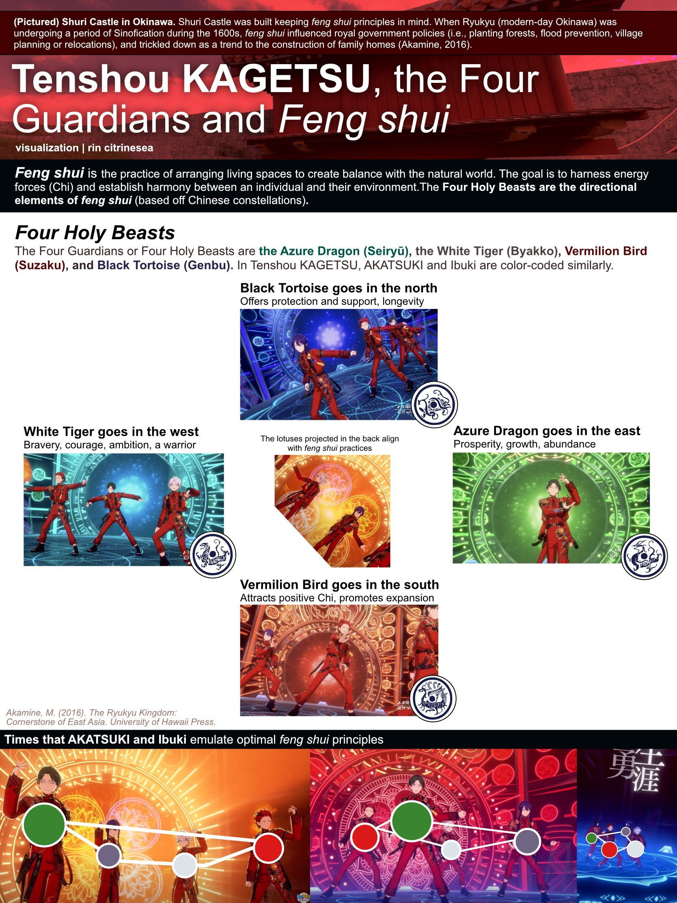

infographics
Browse the galleries below using the arrow buttons!square infographics

Origins in Okinawa ||This infographic touches on different traditions and items you might not know have Ryukyuan origins!

Placing RYUSEITAI songs along an arbitrary spectrum based off of vibes.

Placing AKATSUKI songs along an arbitrary spectrum based off of vibes.
Genres and instrumentation of RST center songs, as well as similarities to each other.

Genres and instrumentation of RST center songs, as well as similarities to each other.
landscape infographics

Keito and Kanata's relationship
Keito and Tetora's relationship
Keito and Tetora's relationship (KR) Translation by 솔플러

AKATSUKI, Yumebutai and Trinities | Trinity symbolism in the masterpiece MV of Konjiki Senya Yumebutai.

Similarities between Keito and Ibuki

Other Similarities for Ibuki

Red as Traditionalism in RYUSEITAI | Covers !!-era RYUSEITAI, RST-M and RST-N, how the color red constrains Tetora and Chiaki, and its ultimate dissolution.

AKARYUSEI Story and Survey Results | Investigating how many stories AKARYUSEI share together (Jan 2024), and what AKARYUSEI-Ps thought were the answers.
portrait infographics

Hoshijima Graphics (1/3), Understanding Hoshijima, the Gajumaru family and Konata (October 2024)

Hoshijima Graphics (2/3), A look at the Okinawa Arc story (October 2024)
Hoshijima Graphics (3/3), Gajumaru and Shinkai Family Trees (October 2024)

Comparing Feng Shui to Tenshou KAGETSU (December 2024)

A color-coded lyrics graphic based off of 310mc's translation of Colors Arise.

A color-coded lyrics graphic based off of my translation of Onmitsu! Ninjutsu Ondo!